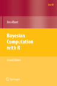

 Bayesian Computation With R
by Jim Albert
Table of Contents
An Introduction to R
Introduction to Bayesian Thinking
Single-Parameter Models
Multiparameter Models
Introduction to Bayesian Computation
Markov Chain Monte Carlo Methods
Hierarchical Modeling
Model Comparision
Regression Models
Gibbs Sampling
Using R to Interface with WinBUGS
Second Edition is the current edition
Description from Springer website
Order from Amazon
Resources:
The LearnBayes package contains all of the R functions and datasets in the book.
Download LearnBayes 2.15 from
CRAN
Download LearnBayes 2.17 from
GitHub
Errata in
Second Edition
; in
First Edition
Functions in LearnBayes package
R Scripts and Output for Examples in Second Edition (NEW)
R Notebook examples of topics in BCWR
My blog for my Bayesian class
2009 and 2011 classes
;
2007 class